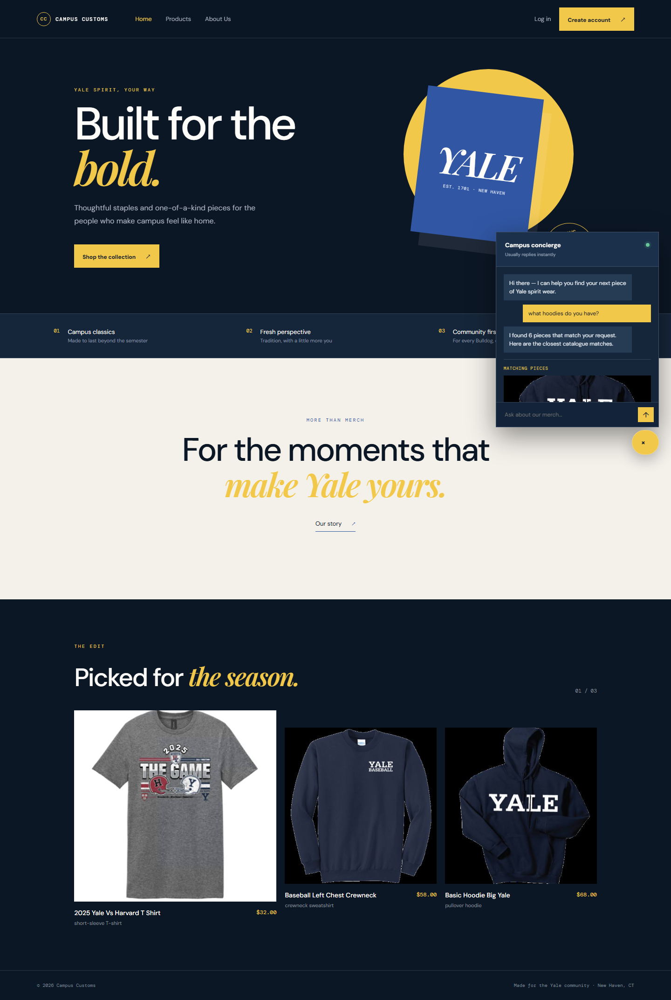
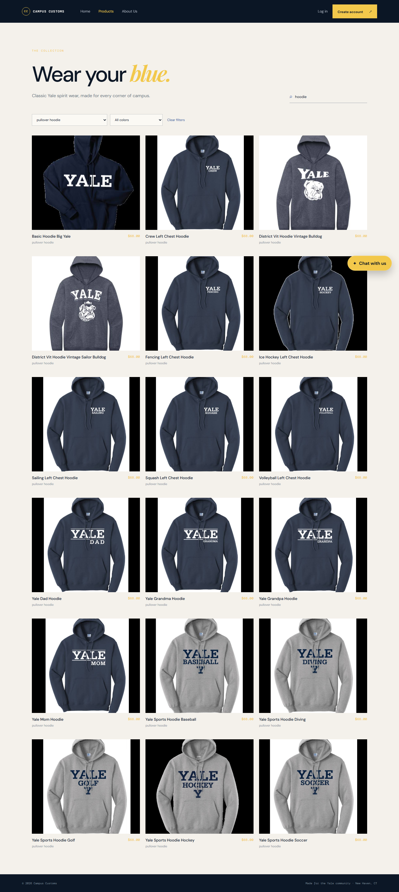

Live application check
Problem 11 evidence captured from the running React frontend connected to the FastAPI backend. Open this file directly; all evidence images use relative paths.
1. Database-backed inventory by size
The shopper asks whether Basic Hoodie Big Yale is available in size M. The assistant responds with the database-backed result: size M is in stock with 5 available, demonstrating an honest inventory lookup rather than an invented quantity.
2. Dynamic product search from chat
The category request “what hoodies do you have?” returns structured catalogue matches. The matching pieces area appears inside the chat interface with product imagery and remains part of the storefront browsing experience.

3. Product search and filtering usability
The Products page shows the search term “hoodie” and the “pullover hoodie” garment filter together. The catalogue updates to a focused grid of matching products, making browsing possible without using the chatbot.
